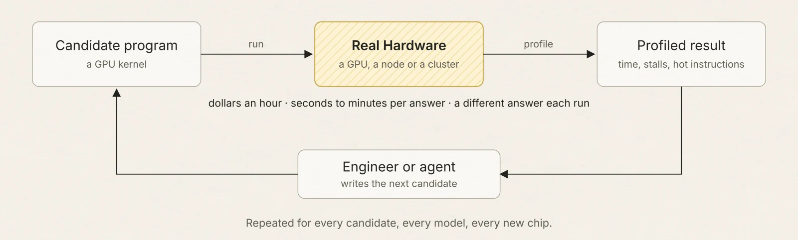
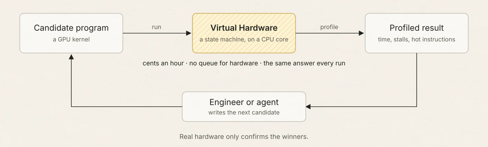
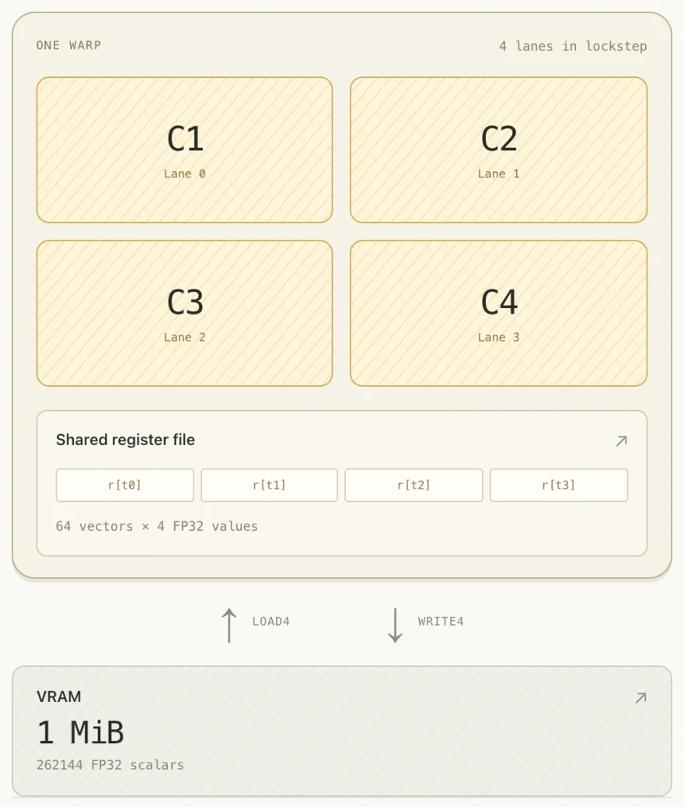
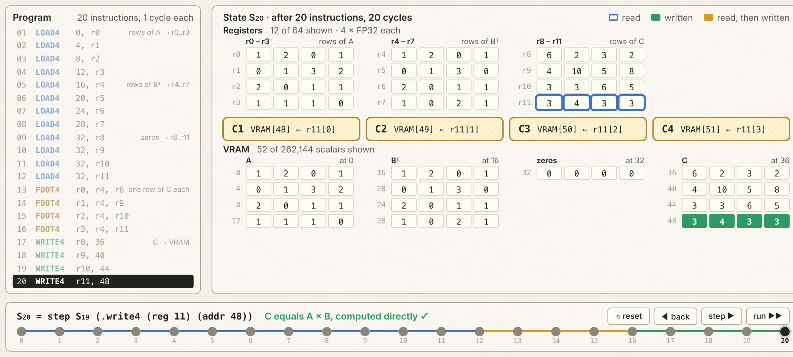
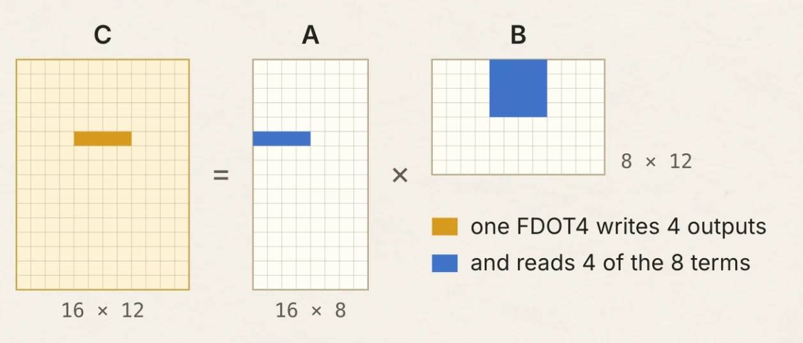
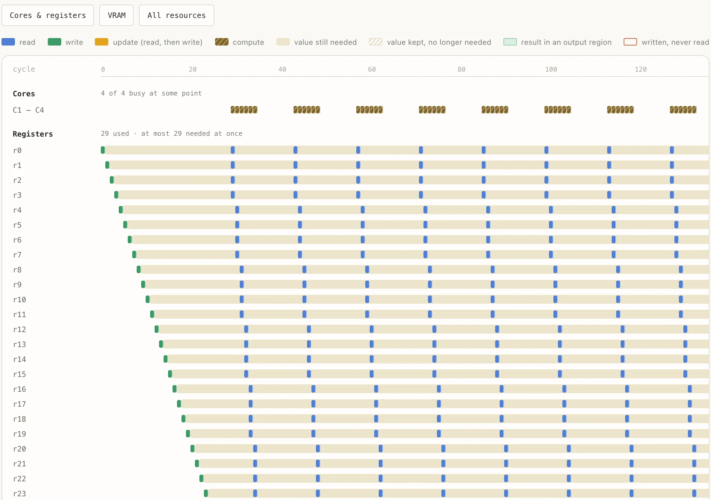
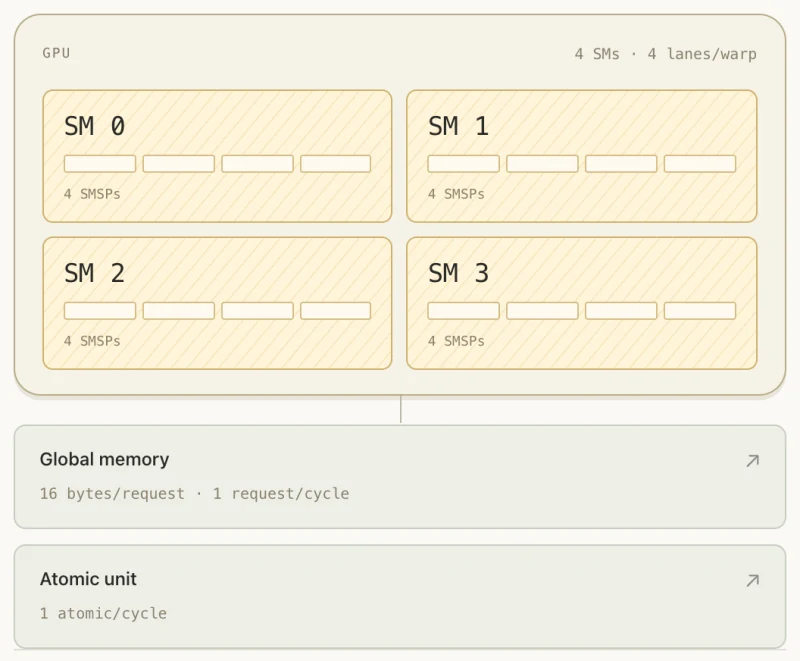
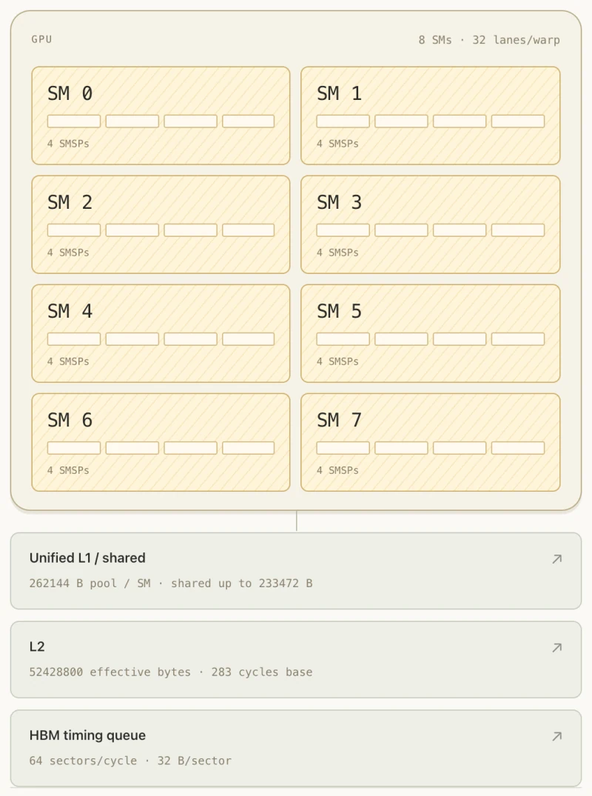
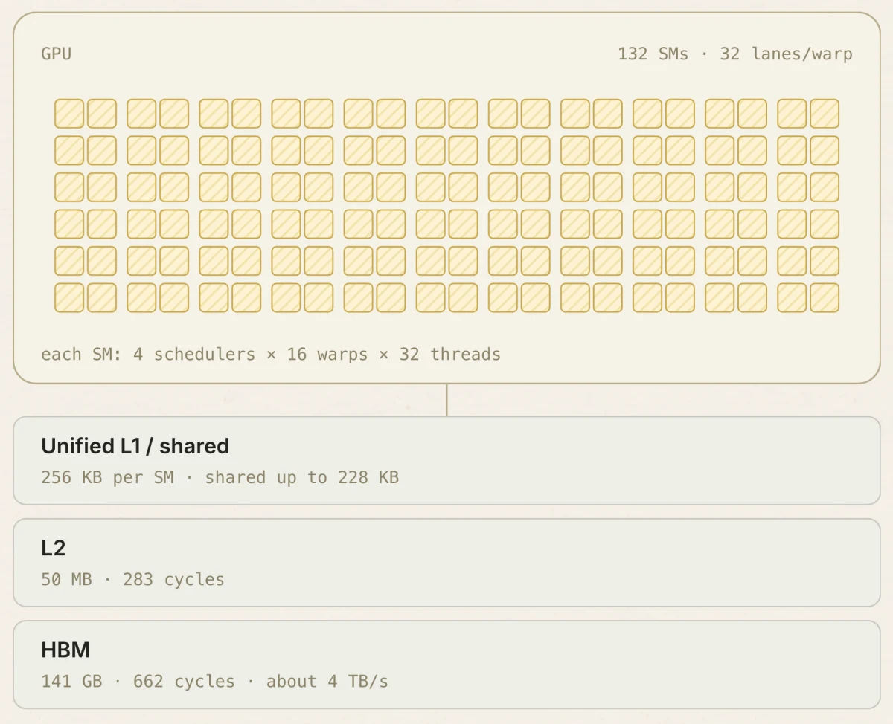

Building Virtual Hardware for Real Performance
I gave a talk at the SF Lean meetup on how I've built a GPU Simulator at Theoric to do GPU performance optimization without the GPU itself. Here's an edited transcript of the talk along with audience Q&A:
Introduction
The aim of Theoric Labs is to make sure all software is bug-free and it runs as fast as it can. The immediate focus is a lot more around compute, because trillions of dollars are going into compute. And the software for compute can be way better than it is now. I want to make sure all these trillions of dollars are used as well as they can be.
Kernel Optimization is hardware-in-the-loop process
Kernel optimization is a hardware-in-the-loop process. You run the program, profile it, then try a different variant and do it again. The proposal here is you can simulate the hardware to get the result which you will get from the profiler, without having the hardware itself. And that can dramatically reduce both the cost in terms of money and the time required to do it.

Why is hardware in the loop optimization process bad:
- It is slow
- It's expensive.
- The hardware can be used for something else, like serving tokens to customers.
- The cost scales linearly: you cannot really do full cluster experimentation, or the bigger machines you have, the more cost it is. Or the bigger the programs, the more cost it is. It scales linearly, the current way of doing experimentation.
Replacing real hardware with virtual hardware
What I'm doing is just replacing this real hardware with virtual hardware, and dramatically reducing the cost. How do I do that? Model the hardware, model the program, and calculate the potential runtime which will come.

I'm modeling the hardware as a state machine, and the assembly instructions as state transitions.
Y1-SIMT: an extremely simple virtual GPU
Example. This is a toy hardware I built, which actually unlocked a bunch of this work. I've been trying to do this since the start of 2026, and then I got stuck. Couple of weeks ago I was discussing with Gemini how mathematicians break down abstract problems down and make progress on them. It told me that they often first try to tackle a toy problem, and make some variable zero or some variable infinite, or to dramatically reduce the complexity they have to deal with. And then grow it. And I was like, okay, I can do that with a GPU. Then, I built this virtual GPU, which has just four cores and three instructions.

Y1-SIMT has:
- 1 MB of VRAM, and
- 64 registers, each holding a 4 length FP32 vector.
- there are four cores, and all four cores work in sync, and execute one instruction parallelly on 4 parallel threads.
This model is a SIMT programming model, which is the dominant programming model if you use any NVIDIA GPU or AMD GPU. SIMT is single instruction, multiple threads. The same instruction is run on multiple threads.
Y1-SIMT has 3 instructions:
- load instruction, which loads a vector from VRAM to registers,
- write instruction as it can write from registers to VRAM,
- fused vector dot product and accumulate
These three instructions are enough to do any matrix multiplication which can fit in the RAM. This is extremely simple, as minimal as a GPU can get.
Y1-SIMT in Lean
So the instruction set is a type on the hardware. And the machine is just one function. You just keep repeating it. For each instruction, you have the execution state, an instruction comes in, the execution state gets updated, and then you do it over and over.
structure HwSpec where
lanes : Nat -- threads per warp
numRegs : Nat -- shared vector registers
vramSize : Nat -- VRAM size in FP32 scalars
cyclesLoad cyclesWrite cyclesFdot : Nat
structure RegId (hw : HwSpec) where
idx : Nat
lt : idx < hw.numRegs
def reg (n : Nat) (h : n < hw.numRegs := by decide) : RegId hw := ⟨n, h⟩
inductive Instr (hw : HwSpec) where
| load4 (src : VecAddr hw) (dst : RegId hw)
| write4 (src : RegId hw) (dst : VecAddr hw)
| fdot4 (a : RegId hw) (b : RegBlock hw) (c : RegId hw)
-- Can't be written down: register 64 doesn't exist.
#check_failure (.load4 (addr 0) (reg 64) : Instr Y1)def step (s : State hw) : Instr hw → Except ExecError (State hw)
| .load4 src dst => do
let v ← readVram s src
pure { s with regs := s.regs.set dst.idx (some v) dst.lt }
| .write4 src dst => do
let v ← readReg s src
pure (writeVram s dst v)
| .fdot4 a b c => do
let va ← readReg s a
let vb ← readBlock s b
let vc ← readReg s c
let out : Vec hw := Vector.ofFn fun t => vc[t] + dot va vb[t]
pure { s with regs := s.regs.set c.idx (some out) c.lt }
def run (s₀ : State hw) (p : Program hw) :
Except ExecError (State hw) :=
p.foldlM step s₀step takes a state and an instruction to the next state, or an error, and running a program is a fold.Demo: a 4×4 matrix multiply
This is a visualization. The program is a flat list of instructions. And here we are multiplying a four by four matrix, which lives in VRAM. These two live in VRAM, and we need to calculate C.
And so before the cores can actually do the multiplication, the data should be loaded into the registers. We execute all these load instructions. Then to multiply, we do four FDOT instructions. And then write it back from the registers to the VRAM.

The virtual profiler
Right. Even for this very, very minimalistic GPU, there are multiple ways of doing the same high-level computation. Here we have two matrices: 16 by 8, and 8 by 12. Because these matricies are big enough that the whole thing does not fit in the registers, you have to decide, how do I move data to the registers and how do I move it back?

There are multiple ways of doing it, but the three main ways of doing it are:
- Keep A in the registers and then load B chunk by chunk.
- Keep B in the registers and load A chunk by chunk.
- split A and B in the K dimension.
- Naive way, where you load and multiply each chunk one by one.
There is a 3x difference in terms of the number of instructions it takes to do this matrix multiplication, even for this extremely simple GPU, extremely small matrix multiplication.

That motivates that how to do low-level programming well actually matters a lot. And it matters especially a lot when you are dealing with massively parallel computers.
Scaling to real hardware
How do we scale this toy model to a real GPU?
- Increase the hierarchy.
- Increase the number of computational units your GPU has.
- Increase the kinds of computational units your GPU has.
- Increase the number of instructions.
In our toy model, each instruction was taking one cycle. In real GPUs you have to model lot more things. Basic principle is the same thing, but lot more complex.
The way I've been doing this is creating, for Hopper, a small Hopper, a medium Hopper and a large Hopper. I should have put an NVIDIA GPU architecture diagram somewhere in there, which I missed. But NVIDIA GPUs have something called an SM, which is a streaming multiprocessor, and they have a subunit called an SMSP, a streaming multiprocessor sub-partition. And in there, there are tensor cores and a lot of other things.
In the small one, I have only four SMs and four threads per warp. Four threads are executed together, and only one level of memory hierarchy. And that's how I've been growing this. And the large one has the same instruction set as real NVIDIA hardware, and has the same number of cores, and almost all stats are the same as the H200.
Yeah, this is the architecture diagram for the small one. And this is the medium. This is another layer of hierarchy; there is an L2 cache now. And this is the large one. It has all the SMs which a Hopper has, and the same memory hierarchy and the same instruction set.



The same as an H200, except deterministic
What is different is our simulation is deterministic. There are some stochastic parts of the actual hardware, and, okay, no, we will not deal with it. And there are some undocumented behaviors. Just make assumptions about them and go along with it. And then calibrate the simulator with the actual hardware, so that you have reasonable guesses for what you have assumed. Right. And no difference with power or temperature or other stuff.
It's a fully deterministic simulator of the H200, and it's all done in Lean, by the way. Lean's type system is, yeah.
Questions during the talk
Audience: Do you plan to account for the thermal flow rate?
Harsh: Maybe at some point, if it's becoming important, then maybe. But the main thing is to be able to rank the kernels, and the cycle-level accuracy does not matter that much. But if it turns out it is important, then you can probably model it somehow and figure it out. Yeah. Any other questions?
Audience: What about caching? I read that these H200 GPUs have multiple levels of caches. Do you model that?
Harsh: The memory hierarchy is modeled. What is the size of the caches, what is the latency between caches, those are modeled. Exactly when the cache is flushed and those kinds of things are actually undocumented. We run experiments and make assumptions about how those are happening.
Audience: But your models are deterministic, and you're not really accounting for timing. You're trying to make that uniform so that you can check the efficiency of the program you're running through. Do I understand that correctly?
Harsh: Yes. And I'll talk about it later as well, but determinism makes it a pure function. Right. That basically means you don't have to do things step by step. You can calculate a lot more in your simulator symbolically, instead of actually executing each instruction.
Audience: Basically, under reasonable operating conditions, your model goes ahead and behaves as the hardware.
Harsh: Yes.
What Lean buys us
Making it deterministic, as a design choice I made, makes the machine a pure function. The spec is a type, and correctness is the base case in here. If it cannot execute an instruction, the compiler rejects it.
And actually Lean also makes it much more structured for agents to write things, because each instruction is a type. They're much, much less likely to make mistakes.
Results
As I mentioned, ranking the programs correctly is the main goal. And then, if you are close to cycle-level accuracy, that's great. Here are some experiments the agent ran. And I'm calling it Y2. The internal name was Yellow, for some random reason. The first one was Y1, the small thing, the minimalistic GPU I built, and this Hopper is Y2. Yeah, it is able to get reasonably close to what the H200 is.
| Kernel | Y2 | H200 | Error |
|---|---|---|---|
| GEMV direct | 25,397 | 27,248 | −6.8% |
| GEMV async-staged | 12,432 | 11,696 | +6.3% |
| GEMV two-CTA | 25,379 | 27,968 | −9.3% |
| SIMT GEMM, 8 CTAs | 6,169 | 6,048 | +2.0% |
And we also just decompiled the Qwen kernels to PTX, and then tried to improve them. It is able to find some gains through the virtual loop as well. Though I need to run bigger experiments and see if we are able to get actual end-to-end serving gains. We'll get there.
| Kernel | Original | Rewrite | Faster by | Predicted |
|---|---|---|---|---|
| RMSNorm 3 | 2.55 µs | 2.10 µs | 1.21× | 1.24× |
| RMSNorm 1 | 2.71 µs | 1.84 µs | 1.47× | 1.52× |
| SiLU slice | 1.38 µs | 1.38 µs | 1.00× | 1.02× |
Making it 1,000× faster
Right now the simulator is running the instructions one by one. It's kind of slow, but it's much cheaper because it's running on CPU. And later I want to make it a thousand X faster, because the same things are running over and over. And because you know you have done this thing before, you just don't have to calculate the things you have done before. You don't have to do it again.
Right. And because it's a deterministic program, you just know, okay, it's the same pattern of instructions running for a different address or a different part of the thing. You can do that work symbolically. And of course, doing it in Lean makes sure it's done correctly. Just doing it in Lean by itself does not make it correct. You have to design the types well, but that helps you ensure the correctness. That's the idea.
Future
And the next step is to do it for all kinds of hardware. All NVIDIA architectures, AMD, TPU, Trainium, and then for all kinds of chips, and full programs. Right now it's running one kernel, but you can also model CUDA streams and bigger programs in a similar manner. And you can also do multi-GPU and bigger cluster things. There are more things to model in there, but it's the same concept, just another level of hierarchy and another level of computation and data movement.
Yeah. And I believe this is a stepping stone into making sure you can make GPU programs run as fast as possible. Yeah. These are my contact details.
Q&A
Where does this sit among simulation and verification approaches?
Audience: I'm a little bit familiar with other simulation stages in hardware synthesis. And yours is situated decidedly above circuit-level simulation. And even really above behavioral-level simulation, because if you go for circuits, this is employing the ISA, essentially. Above the ISA. And it's also not just about full verification, because you actually run it. You actually run the simulation. It's almost like model checking, almost like a symbolic model checking layer of verification. Because the types don't include everything. It type checks, but it could still have different performance. Not statically analyzable. It's only at runtime you observe that.
Harsh: Yeah.
Who is it for?
Audience: Then I'm curious, with your future of memoizing repeated behavior, this then moves you even more abstract, further from the physics. You're targeting kernel simulation here, and it's really for algorithm designers who don't have access, or don't want to pay for access, to a GPU, but do have a lot of CPU time.
Harsh: Yes. That's the idea as well. You move up in the abstraction. And this does not cover any of the compiler stack, but we can reuse the existing compiler stack. But it also allows you to build better compilers because, as you're saying, you can know which parts to grow up in terms of the abstraction hierarchy.
How does it compare with traditional simulators?
Audience: How does your simulator compare with those coming out of more traditional computer architecture?
Harsh: They try to simulate the hardware clock. Basically, they take the clock, see the change, do the thing, and then do it over and over. I'm doing instruction-level simulation instead of clock-level simulation, and those end up being extremely slow.
Can you extract programs from the specification?
Audience: Can you extract actual programs from your specification? Like, do you do program extraction off of your simulated hardware?
Harsh: Right now I'm using actual programs.
Audience: Your state machine is literally one to one with the instruction set?
Harsh: Yes. Yes. I'm modeling the PTX for NVIDIA. They have another layer below PTX called SASS, so the agents did some reverse engineering there, slightly. But for other hardware also, whatever level of access you get to the instruction set, you can model on that.
Could it model thermals and energy?
Audience: Do you see extending this, certainly not this week, but maybe next year, to do things like generating thermal profiles and generating energy usage, and modeling or predicting basically how the thing performs physically, so that you can look at greener ways of using the same hardware?
Harsh: Potentially, yes.
Audience: Okay. That's part of your future plan.
Harsh: Yes. The future plan is to grow up, down, wide.
Up is basically growing in terms of abstraction. Right now it's on the instruction set layer, but you can actually search on the tensor expression layer if you are talking about ML programs. There you can model them as pure tensor expressions, and then figure out how can I best lower it. And you can also model all kinds of optimization techniques as well. For example, FlashAttention does some streaming. There are people who have done category theory work to prove why FlashAttention works, and then you can also have it as a search technique. Grow up in terms of abstraction.
Grow down: right now, as you mentioned, I'm doing instruction level, but you can go down and do circuit-level things, and you can also use it to find better hardware, essentially. And if you model more physics, then the kind of things you are talking about are also feasible.
Audience: And wide?
Harsh: Wide is similar hardware. GPU, TPU, Trainium. That's wide in terms of the number of hardwares.
Audience: The product line.
Harsh: Yeah. Wide also in terms of the number of models you are modeling. Because the aim is around inference optimization first, but you can also do training. Wide is the number of models, like Qwen, Kimi, whatever keeps coming up. Speculative decoding, KV cache optimization. All kinds of things. And then also use cases. First training, then inference, but there is no reason to stop at that.
Why hasn't anyone done this before?
Audience: Why didn't someone do this before? Not in Lean, but just in general?
Harsh: Oh, it's extremely hard to figure it out. I mean, there are thousands of ways of doing it, and most of them don't work.
What does Lean prove, and how do conditionals work?
Audience: I have two questions. The first is that this is in Lean. Are you proving things about correctness of kernels, about optimality of them, or maybe approximate correctness or approximate optimality, if you want to have some statements about numerical stability? And have you found that using Lean, the fact that you can write proofs in it, helps you to get better solutions? And then my second question is more general context. You're clearly not simulating everything, because if you were, you would have something faster than the GPU running on the CPU. You're probably not simulating actual data, I'm guessing. How do you do conditional programs? Like, if I have an if statement in a program, how does that work?
Harsh: This is a good question. GPU programs are generally categorically different from CPU programs, in that there is almost no data-dependent branching, and they are extremely regular. Now, in this specific case, if you see a program, you can actually map the conditional back to the data, and then the simulator can force you to specify the data which leads to data-dependent things. And for everything else, you can leave it open and symbolic.
The first question was: yes, not proving everything. What it is proving is the instruction set does the correct thing on the hardware, and correct means it's a valid instruction from the instruction set. It's extremely low level. It's like how your tokenizer, if you are talking about LLMs, ensures your word is a valid token. It's a syntactic check at an extremely low level. But there is a way to grow this hierarchy to prove more things. Numerical stability and correctness of data, or things like your matrix multiplication actually being in the bounds you want it to, because you can map how a specific part of the tensor expression maps to the low-level instruction, and you know the characteristics of the low-level instruction. You can map it up. Those things are possible. A lot more machinery needs to be built around it. But in theory, that's it. I would want to do all of that as well.
What about CPUs, TPUs and heterogeneous systems?
Audience: How do you think the simulator can evolve when the workflow requires, like, CPU and GPU interacting, or, for example, CPU and TPU? How do you think the simulator can evolve?
Harsh: Then you will need two simulators. In this case, this is just one machine, and we are not modeling the CPU and GPU interaction, or the heterogeneous things. Then basically there are multiple copies: one TPU simulator, one GPU simulator. Then you need to model the data movement between them, and then you need to model, okay, how do I run the instructions. It's the same thing, but another layer of complexity on top.
Audience: Especially for a distributed system. You'd have multiple simulators, of course.
Harsh: Yeah, so you will have multiple simulators, and then you need to model the stochastic part: the data can take some more time to reach from one place to another. You will have to model some of that. And for distributed things, there is TLA+, and there are a lot of other programming models. Those can be used, but it's basically the same idea. There as well, by the way, I would want to make the thing deterministic, and then maybe run three copies of various scenarios of what can happen. The same idea can be extended to heterogeneous systems.
Host: Let's move the rest to after. Thank you, Harsh.